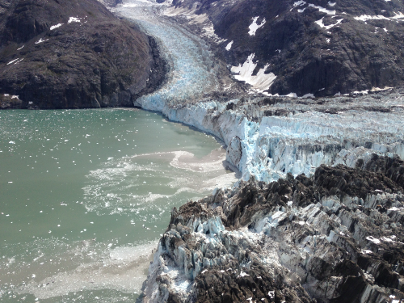
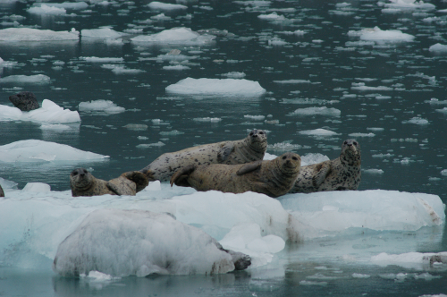

Harbor seals are the most broadly distributed pinniped in the northern hemisphere. In Alaska, harbor seals are a species of conservation concern due to declines that have occurred in several regions (Pitcher et al. 1990; Frost et al. 1999; Mathews & Pendleton 2006; Small et al. 2008; Hoover-Miller et al. 2011). Some of the largest aggregations of harbor seals in Alaska are found seasonally in tidewater glacial fjords where harbor seals use icebergs (large chunks of glacial ice) that calve from tidewater glaciers as habitat (Jansen et al. 2014).
The National Park Service and Glacier Bay National Park, in collaboration with the University of Alaska Fairbanks Geophysical Institute and the National Marine Mammal Laboratory, is using GPS, satellite and aerial imagery, and GIS technology to monitor trends in the abundance of harbor seals in Glacier Bay and to assess the relationship between the availability of glacial ice and spatial distribution of harbor seal.
| Tidewater glacial habitat |
Tidewater glaciers are a prominent landscape feature along the southeastern and southcentral coasts of Alaska and play an important role in landscape and ecosystem processes. Tidewater glaciers calve large icebergs into the marine environment that then serve as important habitat for harbor seals for resting, pupping, nursing the young, molting, and avoiding predators.
Tidewater glaciers are naturally dynamic and many of the ice sheets that feed tidewater glaciers in Alaska are thinning and/or retreating. Changes in available ice may influence harbor seals; however, relationships between the availability of glacial ice and spatial distribution of harbor seal are currently unknown.
|  |
|
Joint terminus of the Johns Hopkins Glacier and the Gilman Glacier that end in the Johns Hopkins Inlet. These tidewater glaciers calve into the inlet providing drifting glacial ice that serves as a valuable habitat for pinnipeds, such as Harbor seals.
Photo by Jamie Womble, NPS.
|
| Harbor seals in Glacier Bay National Park, Alaska |
Glacier Bay National Park is located in southeastern Alaska. Glacier Bay is a recently deglaciated fjord comprised of several tidewater glaciers. Although Glacier Bay National Park historically supported one of the largest aggregations of harbor seals in Alaska (Calambokidis et al. 1987, Hoover-Miller 1994), the number of harbor seals declined precipitously from 1992-2008 (Mathews & Pendleton 2008; Womble et al. 2010).
The largest aggregation of harbor seals in Glacier Bay is found in Johns Hopkins Inlet, a tidewater glacial fjord in the upper West Arm of Glacier Bay.
|  |
|
Harbor seals resting on glacial ice.
Photo by Jamie Womble, NPS.
|